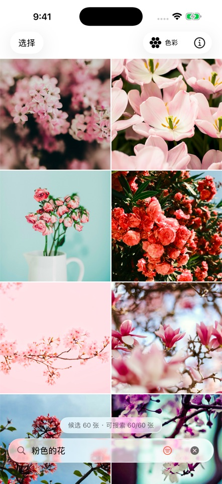
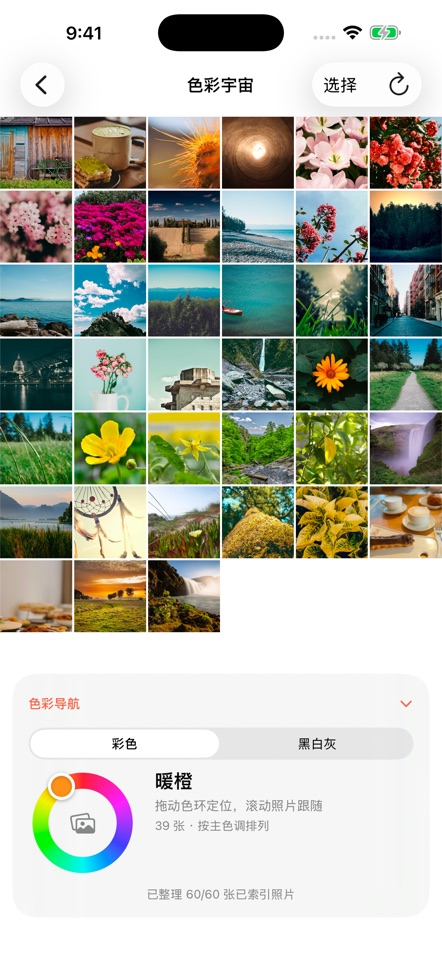
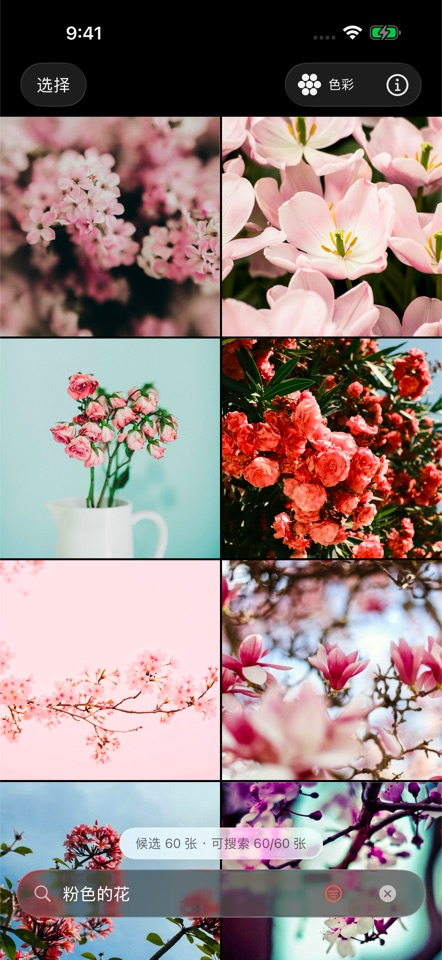

想到什么，就搜什么。
海边的日落、朋友的合影、午后的咖啡……像平常说话一样描述照片。支持中文和英文，不用提前给照片打标签。
海边的日落一杯咖啡和朋友的合影
为 iPhone 而生 · 即将上线
不必记得日期，也不用翻遍相册。
说出脑海中的画面，让一句找图帮你找回来。
首版免费 · iOS 26 及以上

真实 App 界面 · 示例照片
少一点翻找，多一点重逢
一句描述、一张图片、一抹颜色。用你记得的方式，找回想看的照片。
海边的日落、朋友的合影、午后的咖啡……像平常说话一样描述照片。支持中文和英文，不用提前给照片打标签。
选一张参考图片，寻找图库里视觉相近的照片。那些不好用语言形容的画面，也有了寻找的方向。

色彩宇宙
从暖橙、粉红到深蓝，让照片在连续的色彩空间里排开。滑动色环，找到那个颜色里的回忆。
也能单独探索黑、白、灰。
照片与搜索索引保存在设备上。
模型下载完成后，已索引的本地照片可离线搜索。
可以只允许访问部分照片，并随时调整权限。
日常使用，也照顾到了
找到照片后，接着完成整理。删除照片前需要确认，操作会同步更改系统图库。
支持浅色、深色和跟随系统外观。
App 支持中文与英文，跟随 iOS 的 App 语言设置。

第一次见面
首次使用联网下载约 388 MB 的 Apple 托管模型，建议连接 Wi-Fi。
允许访问全部或部分照片，由你决定要搜索的范围。
首次索引可能让手机变热；之后通常只处理新增或修改过的照片。
App 正在准备上架。首版计划免费，正式上线后会在这里提供 App Store 下载入口。
首次下载模型需要联网。准备完成后，已索引的本地照片可离线搜索。打开或选择下载仅存在于 iCloud 的照片时，仍需要网络。
我们没有接收照片、搜索内容或索引的服务器。首次模型下载使用 Apple 服务；你主动访问或开启下载 iCloud 照片时，会使用 Apple 的照片服务。
请检查照片访问权限和索引进度。未授权、尚未完成索引或仅在 iCloud 且未下载的照片可能不出现在搜索结果里。搜索结果也可能与描述存在偏差。
删除需要确认，并会更改系统照片图库。仍在可恢复期限内的照片，可在系统相册的“最近删除”中恢复。
一句话、一张图、一抹颜色。
为 iPhone 而生 · 即将上线